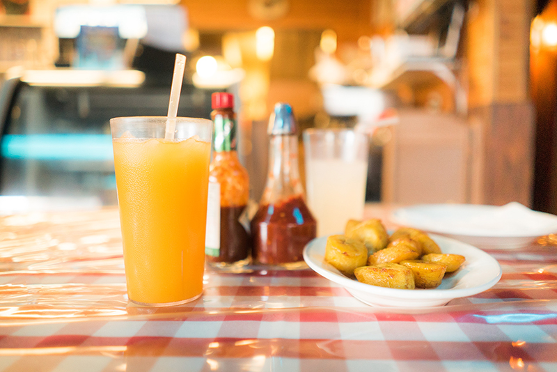

Never Eat At Home Again
By Susan Smith

As my New Year's resolution in 2016, I vowed to never again make a meal at home. I found that cooking meals at home took time and effort, and the food never seemed to measure up to the greasy food that is readily available at any old diner.
The Art of Doing Absolutely Nothing
By Jose Perez

Is your job taking too much time away from your rest and relaxation? Does your algebra homework keep you up at night? I used to be in the same boat until I quit work and school and devoted myself to doing absolutely nothing. Many people think that laziness is a vice, but I am here to tell you that it is an art.